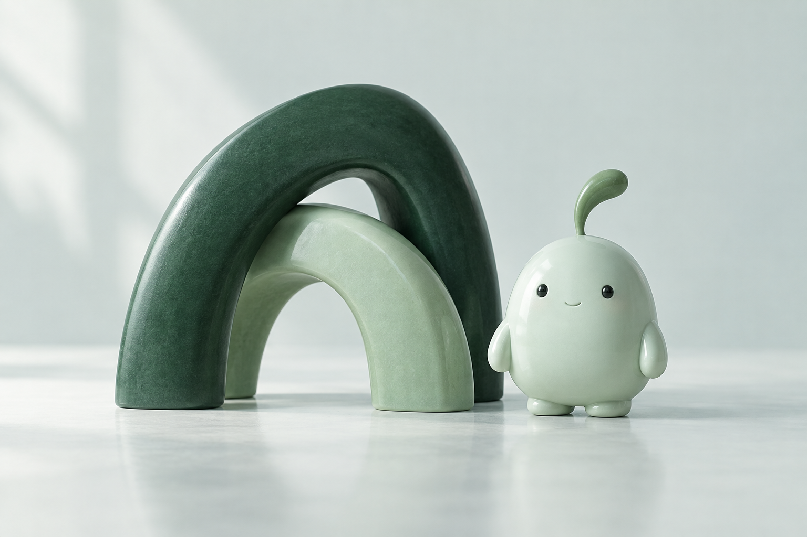

buildrstudio
Built with intention.
An independent product company. Thoughtful technology, considered design, and useful everyday experiences.
We build thoughtful digital products for the moments that matter in everyday life.
Explore the identity
A clear relationship between the people who build the product and the companion you welcome into your life.
An independent product company. Thoughtful technology, considered design, and useful everyday experiences.
A pregnancy and baby tracker with a warm companion, a personal journal, and space for your questions.
A product by BuildrStudioA single continuous construction. Two rounded forms make a confident B, balancing structure with a softer human edge.
The geometric monogram stands alone at small sizes. The lowercase wordmark keeps the company approachable.
Numa’s enclosing arch echoes the same rounded geometry, with a small central circle suggesting presence and care.
Evergreen anchors the identity. Porcelain opens the space. Mint brings warmth without relying on pink.
Select a swatch to copy its color.
Serif headlines bring warmth and personality. Reserved for storytelling and meaningful moments.
Clear, readable text for navigation, journal entries, and practical information.
Type scale: 12 / 15 / 22 / 38 / 54 / 76Quiet surfaces, clear actions, and generous spacing. These interactive samples show how Numa could feel.
How does today feel?
An okay day. There’s space for that, too.
No streak pressure. No judgment.8px button corners. 20px surfaces. An 8px spacing rhythm. Motion only to acknowledge an action.
The companion offers support and helps organize questions. Clinical information will need sourcing and review before launch.
Numa is a small, independent presence. A soft pebble form, a sprout of curiosity, and a friendly face.
The character belongs beside the pregnancy journey. Baby development will have its own separate visual language.
Calm and attentive for questions and reflection.
Warm and expressive for personal milestones.